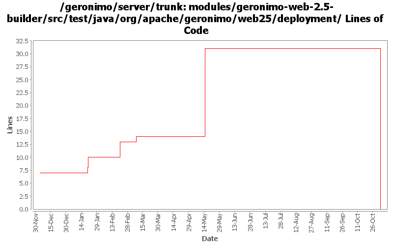

[root]/modules/geronimo-web-2.5-builder/src/test/java/org/apache/geronimo/web25/deployment

| Author | Changes | Lines of Code | Lines per Change |
|---|---|---|---|
| Totals | 17 (100.0%) | 40 (100.0%) | 2.3 |
| djencks | 9 (52.9%) | 32 (80.0%) | 3.5 |
| jdillon | 1 (5.9%) | 7 (17.5%) | 7.0 |
| akulshreshtha | 1 (5.9%) | 1 (2.5%) | 1.0 |
| prasad | 4 (23.5%) | 0 (0.0%) | 0.0 |
| kevan | 2 (11.8%) | 0 (0.0%) | 0.0 |
GERONIMO-3565. Modules distributed amongst framework/modules and plugins
0 lines of code changed in 4 files:
GERONIMO-3307, rest of commit. Fix manifest classpath resolution some more
0 lines of code changed in 1 file:
GERONIMO-3156 fix HTTPMethods to avoid wrong unchecked permissions
18 lines of code changed in 1 file:
GERONIMO-2943 add ModuleBuilderExtensions to web module builders
5 lines of code changed in 3 files:
GERONIMO-2816 related. Move the NamingBuilder.buildEnvironment late enough so a classloader is available for help with annotation procesing. Intermediate patch to coordinate work.
7 lines of code changed in 3 files:
GERONIMO-2763 test that generates *.do:/login.do pattern
2 lines of code changed in 1 file:
G-1585 Added testcase for extension pattern (*.do) in security constraints
1 lines of code changed in 1 file:
Use logging instead of System for test output
7 lines of code changed in 1 file:
GERONIMO-2537 Fix notices and src headers in recent jee5 updates. Update Web Console notice.txt w/ ibm donation information, add copyright to assembly notice files, and remove ASF v 1.1 license from source borrowed from xerces project
0 lines of code changed in 2 files: